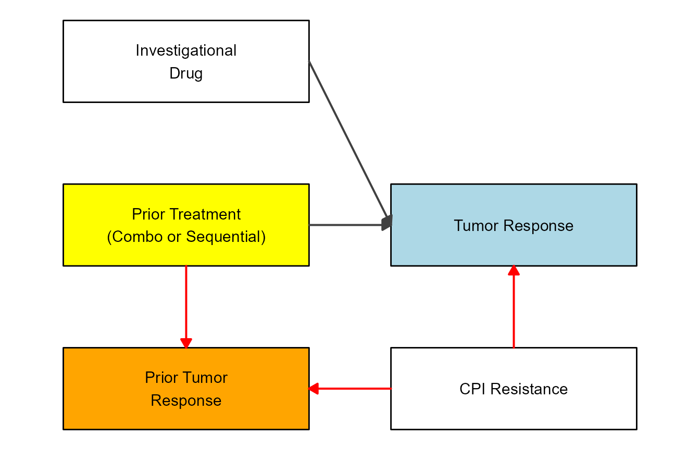

While the main reason for the existence of flowdiagramr is to create nice-looking diagrams for compartmental simulation models, it is possible to create other, more general flow charts. Basically, anything that can be drawn as a set of nodes/boxes and interactions/arrows can be created. This vignette gives a few brief examples to illustrate the use of the package for making general flow diagrams. The possibilities are of course endless, hopefully the following examples give you ideas on how to do things.
We are assuming that you read through the other vignettes describing the various ways to modify diagrams. We’ll therefore do a few modifications here but won’t explain things. The main purpose is to show a few diagrams that are not based on models.
As of this writing, the Wikipedia Flowchart page has the following as an example of a simple flow chart.
We’ll try to recreate a simplified version of this. First, we’ll specify the model. The model here is not a dynamical systems model like the ones we have looked at so far. Nevertheless, as long as it can be represented as a combination of variables/compartments/nodes, and flows/transitions between those, we can use flowdiagramr to draw the diagram.
Here is how you can implement this model.
mymodel = list(variables = c("L","P","B","Pl","R","Re"),
flows = list(L_flows = c("-L"),
P_flows = c("L","-no_P","-yes_P"),
B_flows = c("yes_P","-yes_B", "-no_B"),
Pl_flows = c("no_P"),
R_flows = c("yes_B"),
Re_flows = c("no_B")
)
)
model_settings = list(varlocations = matrix(data = c("L", "",
"P", "Pl",
"B", "R",
"Re","" ),
ncol = 2, byrow = TRUE),
varbox_x_size = 2)Note that to make the diagram logic work, we have to define actual flows. For instance we can’t just label the various flows with “Yes” or “No” like in the original diagram. If we did this, flowdiagramr wouldn’t know with which boxes/variables to associate the arrows with.
Next, we prepare the diagram, then plot it.
diagram_list1 <- prepare_diagram(mymodel, model_settings)
my_diagram <- make_diagram(diagram_list1)
plot(my_diagram)This has a vague resemblance with the original, but of course we need to polish it further. We can get fairly close with a few adjustments by using update_diagram().
First, let’s find out the names of the diagram elements:
update_diagram(diagram_list1)
#> No settings were provided; returning names of elements in diagram_list dataframes.
#> Variables: L, P, B, Pl, R, Re
#> Flows: m_L, m_no_P, m_yes_P, m_yes_B, m_no_BNow, let’s do some polishing (note the \n in the label text to get line breaks):
diagram_settings1 <- list(var_label_text = c(L = "Lamp doesn't\n work",
P = "Lamp \nplugged in?",
B = "Bulb \nburned out?",
Pl = "Plug in lamp",
R = "Replace bulb",
Re = "Repair lamp"),
var_fill_color = c(L = "pink", P = "yellow", B = "yellow",
Pl = "green", R = "green", Re = "green"),
var_outline_color = c(all = "black"),
var_label_color = c(all = "black"),
var_label_size = c(all = 4),
flow_label_text = c(m_L = "", m_no_P = "No",
m_yes_P = "Yes", m_yes_B = "Yes",
m_no_B = "No"),
flow_label_size = c(main = 4)
)
diagram_list2 <- update_diagram(diagram_list1, diagram_settings1)
my_diagram <- make_diagram(diagram_list2)
plot(my_diagram)That looks pretty good. If you want to change the shapes of the boxes, you’ll need to adjust the ggplot code, as explained in this vignette.
Directed Acyclic Graphs (DAG) are flow diagrams without feedback loops. There are other R packages that can create DAG plots. flowdiagramr was created because we needed something more flexible that allowed feedback loops. That said, flowdiagramr can also make DAGs. Here is an example from some recent work we did on influenza vaccines.
The variables included in the DAG are vaccination status (Vac), intrinsic host characteristics (Cha), HAI antibody titers (Hai), and risk of infection (In). First, we specify the model
dag_model = list(variables = c("Vac","Cha","Hai","In"),
flows = list(Vac_flows = c("-vac_to_in","-vac_to_hai","cha_to_vac"),
Cha_flows = c("-cha_to_vac","-cha_to_hai","-cha_to_in"),
Hai_flows = c("vac_to_hai", "cha_to_hai","-hai_to_in"),
In_flows = c("vac_to_in","cha_to_in","hai_to_in")
)
)Next, we provide settings to place the variables in locations we want, and adjust box size and spacing.
dag_settings = list(varlocations = matrix(
data = c("Vac", "", "",
"", "Hai", "In",
"Cha", "", ""),
ncol = 3, byrow = TRUE),
varbox_x_size = 4,
varbox_y_size = 1.5,
varspace_y_size = 0.3,
varspace_x_size = 0.6
)Now we prepare the diagram
dag_list <- prepare_diagram(dag_model, dag_settings)This is how the default looks like
dag_diag <- make_diagram(dag_list)
plot(dag_diag)We wanted a skinny diagram to save space. The problem with this is that some arrows are crossing over the HAI box. To prevent that, we manually curve the arrows using update_diagram. Since we are at at, we also do some further style changes.
Get names of variable and flow elements:
update_diagram(dag_list)
#> No settings were provided; returning names of elements in diagram_list dataframes.
#> Variables: Vac, Cha, Hai, In
#> Flows: m_vac_to_in, m_vac_to_hai, m_cha_to_vac, m_cha_to_hai, m_cha_to_in, m_hai_to_inSet and apply updates:
diagram_settings = list(var_label_text = c(Vac = "Vaccination",
Cha = "Intrinsic\nCharacteristics",
Hai = "HAI titer\npost-vac",
In = "Infection"),
var_outline_color = c(all = "black"),
var_label_size = c(all = 6),
flow_curvature = c(m_cha_to_in = 0.4, m_vac_to_in = -0.4),
flow_show_label = c(main = FALSE),
flow_line_size = c(main = 1),
var_fill_color = c(Vac = "#56b4e9", Cha = "#56b4e9", Hai = "#009e73", In = "#E69F00")
)
dag_list2 <- update_diagram(dag_list, diagram_settings)Make and plot the updated diagram
diag2 <- make_diagram(dag_list2)
plot(diag2)This shows another DAG as example. In this case, the scenario is looking at drug treatment against cancer. We won’t go into details here about the biology behind the whole situation, instead we’ll just draw the diagram.
Define variables and flows. In this example, we also specify all kinds of stylings we want, and then apply all below. Just another order of setting up things.
variables = c("ID","PT","TR","PTR","CPI")
varnames = c("Investigational\nDrug","Prior Treatment\n(Combo or Sequential)","Tumor Response","Prior Tumor\nResponse","CPI Resistance")
names(varnames) <- variables
varlocations = matrix(data = c("ID", "",
"PT", "TR",
"PTR", "CPI"),
ncol = 2, byrow = TRUE)
varcolors = c("ID" = "white","PT"="yellow","TR"="blue","PTR"="orange","CPI"="white")
flows = list( ID_flows = c("-k1*ID"),
PT_flows = c("-k2*TR","-k3*PT"),
TR_flows = c("k1*ID","k2*TR","k4*CPI"),
PTR_flows = c("k3*PT","k5*CPI"),
CPI_flows = c("-k4*CPI","-k5*CPI")
)Now we step through the usual steps
#define model
dag_model = list(variables = variables, flows = flows)
#define layout
model_settings = list(varlocations=varlocations,
varbox_x_size = 3)
#prepare model
dag_list = prepare_diagram(dag_model, model_settings)
#update with stylings
diagram_settings = list(var_fill_color = varcolors,
var_label_text = varnames,
var_label_color = c(all = "black"),
flow_show_label = c(all = FALSE),
var_label_size = c(all = 4))
dag_list2 <- update_diagram(dag_list,diagram_settings)
#create and plot diagram
dag_diag2 <- make_diagram(dag_list2)
plot(dag_diag2)
AH: LAST ARROW NOT RIGHT